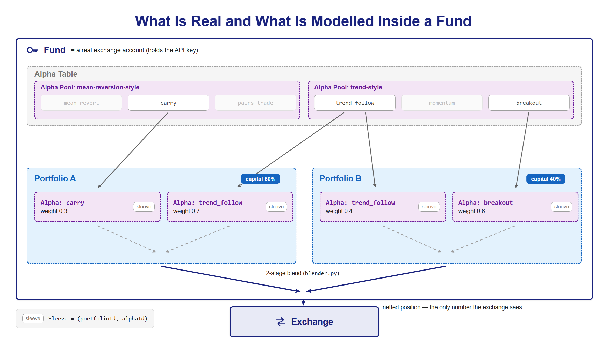
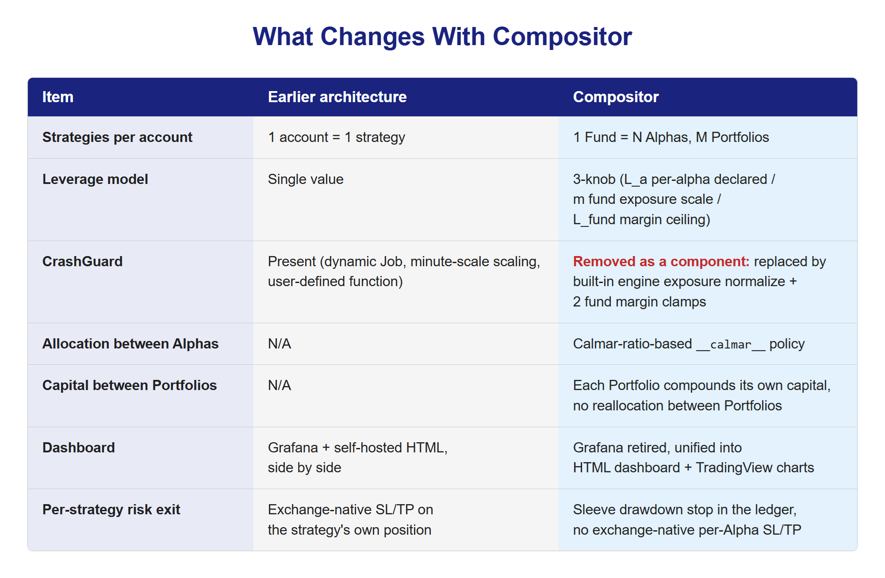
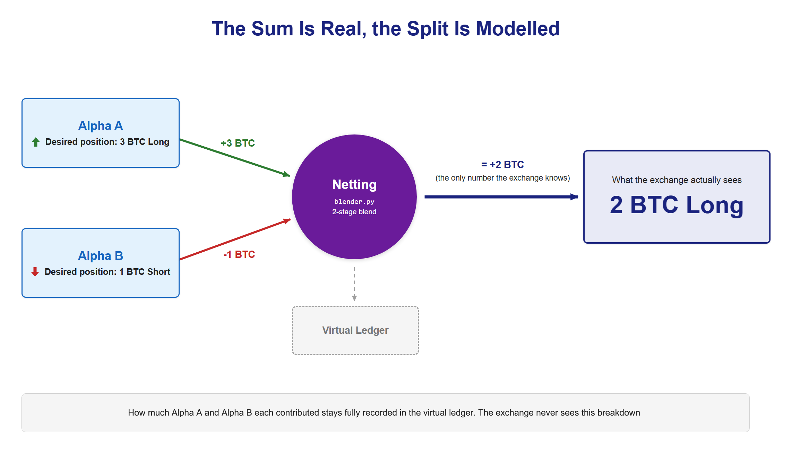

One real position, unlimited virtual strategies underneath it. That's Compositor, our blend engine.
An earlier post walked through LiveSys, our original live trading engine, built on a simple assumption: one exchange account runs one strategy file. That assumption held from the day the engine shipped until very recently.
It is also the exact assumption Compositor was built to break.
Compositor now carries production. The account that used to trade a single strategy was handed over to it without closing its positions, and the other accounts that each ran one strategy have been consolidated into the same Fund. It is also young, so this post covers what it changes, why, and what still isn't done.
The One-Line Idea
If you take one thing away from this post, take this: the sum is anchored to reality, only the split is modeled.
Here's what that means in practice. An exchange (Bitget, Binance, whichever) only ever sees one thing per account: a single net position. It doesn't know or care that the number it's looking at is actually the combined output of five different strategies pulling in different directions. Say Alpha A wants to be 3 BTC long, and Alpha B, running in the same account, wants to be 1 BTC short. The exchange never sees either of those numbers. It sees 2 BTC long, the netted-out sum, because that's the only position that physically exists.
Everything below that netted sum (which strategy is "responsible" for how much of it, how each one is performing, how capital is split between them) is a virtual ledger. And critically, it's computed forward: the system decides the split first, then executes the sum. It is never reverse-engineered by trying to guess, after the fact, which strategy caused which fill. That distinction is the whole architecture in one sentence.
For anyone reading this who isn't neck-deep in the code: think of it like a single company bank account that the bank statement never breaks down by department. The company's own internal accounting still tracks exactly how much each department contributed and how each one is performing. That bookkeeping is completely real and completely trustworthy; it's just a layer the bank itself never sees.
Six Layers, One Bank Account
Compositor breaks this down into several layers, starting from the one real thing and building virtual structure on top of it:
- Fund: a real exchange account, the one that holds the API key. This is the only layer that physically exists on an exchange's books. Everything built on top of it is virtual.
- Alpha Table: the full list of alphas registered to that Fund.
- Alpha Pool: a grouping, inside the Alpha Table, of alphas that share similar characteristics.
- Portfolio (×M): a virtual book-keeping split of the Fund's capital. A Fund can have any number of Portfolios.
- Alpha: a strategy picked from an Alpha Pool, running inside a Portfolio at some weight.
- Sleeve: the pairing of one specific Portfolio with one specific Alpha (
portfolioId,alphaId). This is the actual unit that performance and allocation get tracked against. The term itself is borrowed from an existing practice in institutional asset management: sleeve-level accounting already describes exactly this pattern, tracking several strategies inside one custodial account with each sleeve's own cash and positions kept separate internally, even though the custodian only ever sees one account-level number.
The analogy the team uses internally is a single bank account with several traders sharing it. That one account is the Fund. It's split among several traders (the Portfolios), each getting a book-keeping share of the account's capital, not a physically separate account. Each trader, in turn, blends several strategies at their own chosen weights. Those are the Alphas, and a trader running one strategy is a Sleeve. But no matter how many traders or how many strategies each one runs, the bank itself only ever sees one net number move in or out of the one real account.
The blending itself happens in two stages, in a module called blender.py. First, within a single Portfolio, the weights of its Alphas combine into that Portfolio's own net weight. Second, across all the Portfolios in a Fund, those Portfolio net weights combine into the single account-level net weight sent to the exchange. Schematically, it looks like this. This is illustrative of the two-stage shape, not the literal engine code:
# blender.py — two-stage blend (illustrative shape, not literal engine code)
def blend_portfolio_weight(alpha_weights: dict) -> float:
# Stage 1: alpha-to-alpha, inside one portfolio.
# Uses the built-in Calmar-ratio policy (`__calmar__`).
return calmar_weighted_sum(alpha_weights)
def blend_fund_weight(portfolio_weights: dict, portfolio_capital_share: dict) -> float:
# Stage 2: portfolio-to-portfolio, inside one fund.
# Each portfolio's share follows its own capital, which compounds on
# its own results. Nothing re-allocates capital between portfolios
# (see "Calmar Allocation" below).
return sum(w * portfolio_capital_share[p] for p, w in portfolio_weights.items())If the same Alpha is selected by two different Portfolios in the same Fund, that is simply two Sleeves: the Alpha's code is shared, but each pairing is tracked on its own.

What's Different
One Strategy Becomes Many Alphas
The older execution model assumes one account runs one strategy file. Compositor breaks that assumption on purpose: a single Fund can run any number of Alphas, spread across any number of virtual Portfolios. This isn't a minor parameter tweak. It's the reason this layered model and the two-stage blend exist at all. Without it, there'd be nothing to blend.
The Leverage Model Got a Third Knob
Multi-alpha blending raises a question the older model never had to answer: if five Alphas can each declare their own leverage, and the Fund itself has a margin ceiling, how do those two numbers interact without either silently overriding the other? Compositor's answer is three separate knobs. L_a is each Alpha's own declared leverage. m (capped at 3.0, default 1.0) scales the whole Fund's exposure up or down. Return and drawdown move roughly proportionally with m, but Sharpe ratio doesn't, since it's scale-invariant. L_fund is a margin ceiling, and it's deliberately kept separate from that exposure scale in the math:
net weight = (m × fund exposure) / margin ceiling
Dividing by the margin ceiling this way constrains capital usage without distorting the exposure scale itself. It's a small piece of arithmetic doing real work: it lets Alpha-declared leverage reach execution while guaranteeing Alphas that don't declare one keep trading at exactly the notional they always did.
CrashGuard Is Gone, Replaced By Something Structurally Different
The older architecture has a component called CrashGuard, a dynamic Kubernetes Job that does minute-scale position scaling, but only for strategies that define a crashguard(data, positions, config_dict) function. It hooks directly into the assumption that there's exactly one strategy file per account to inspect.
That hook doesn't survive the move to multi-alpha. Once an account can run any number of strategies simultaneously, "the one strategy file's crashguard function" stops meaning anything: there is no longer a single function to call. So CrashGuard-the-component is removed entirely in Compositor. The database columns it depended on are still there, unused. Leaving them costs nothing, while dropping columns from a live trading database is a risk with no upside, so that cleanup migration is deliberately left unapplied.
Compositor still has an equivalent safety net, built differently, in two pieces. One lives inside the same shared engine that computes an Alpha's signal in the first place (more on that engine-sharing in a later post): if an Alpha's target weights add up to more exposure than the cap it declared, the engine scales them back down proportionally in the same cycle, with no separate Job and no user-defined function to write. The other sits at the Fund level and acts twice before an order executes: if the blended target would tie up more than 90% of the account's balance as margin, the whole target is scaled down evenly, and any new order that still needs more margin than is available is held back.
Calmar Allocation: Only Half-Alive
Compositor introduces a real, built-in allocation policy called __calmar__, based on the Calmar ratio, a return-over-drawdown metric that a commodity trading advisor named Terry Young published in 1991 specifically to fold a strategy's worst losing stretch into its score alongside how much it made overall. It governs how weight shifts between Alphas within a single Portfolio.
The second tier, capital between Portfolios inside a Fund, works differently. Each Portfolio starts with the capital declared when it was registered, and from then on that capital moves only with the Portfolio's own profit and loss. Nothing reallocates capital between Portfolios: each trader compounds their own results, and no trader's gains are lent to another.
How Costs Land on Each Sleeve
Because only a netted position ever reaches the exchange, its fees and funding payments arrive as fund-level numbers, and the system has to decide which Sleeve pays for what. Those rules are deterministic and written down in advance.
Fees are charged only on the net order that actually went to the exchange, then split across Sleeves in proportion to how much each one moved: its allocation times the change in its weight. Where two Sleeves cancel each other inside the net, such as Alpha A buying while Alpha B sells, there is no exchange fee to split, so that internal crossing costs nothing. Funding follows positions rather than turnover, so it is split in proportion to what each Sleeve held. Whatever rounding is left over goes to the largest share, so the pieces always add back up exactly to the total, and a cost with no Sleeve to attach to is kept on an explicit unallocated line, so it never disappears.
Two parts are deliberately simple. Every Sleeve that trades a symbol in the same cycle shares one volume-weighted fill price, so there is no per-Sleeve execution price and no per-Sleeve slippage. Slippage shows up instead as the gap between a Sleeve's intended curve and its executed curve. The check that ties the ledger back to reality is also a tolerance, not an identity: the Sleeves' combined value is compared with the account's real equity, and drift beyond the tolerance raises an alert while trading keeps running. The split between Sleeves is modeled, and the sum stays anchored to what the exchange reports.
The Dashboard Is Being Rebuilt Around It
The older setup ran two dashboards side by side: Grafana JSON dashboards, and a self-hosted HTML dashboard (a portfolio view and a per-strategy grid) served directly by the API pod. Compositor retires Grafana entirely and expands that HTML groundwork into the primary dashboard, one that talks directly to MainAdapter and the database, and embeds TradingView's lightweight-charts library, no more Grafana iframes. It's a continuation of something that had already started before it.
Per-Alpha Stops Move From the Exchange to the Ledger
Exchange-native stop-loss and take-profit orders attach to a position on the exchange, and that is where the netting model changes things. In the older model, a strategy owns its own position, so it's meaningful to attach a stop to "this strategy's position." In Compositor, only one blended net position ever reaches the exchange. Alpha A's theoretical 3 BTC long and Alpha B's theoretical 1 BTC short don't exist as separate exchange-level positions to protect; only their sum, 2 BTC long, does. So there is no per-Alpha position on the exchange for a stop order to attach to, and those order paths were removed.
The risk exit itself didn't disappear. It moved into the virtual ledger, where every Sleeve does exist. An Alpha can declare a maximum drawdown, and when a Sleeve's drawdown crosses it, the system sets that Sleeve's allocation to zero and marks it stopped. Nothing is sent to the exchange. The stop changes the Fund's next net target, and the netting step closes the exposure on the next cycle, the same way it handles any other change in weights. Only the Sleeve that broke down is stopped, so the same Alpha keeps running in other Portfolios, and a Portfolio-level version of the same rule exists too. Restarting a stopped Sleeve is an explicit action that never happens on its own. What Compositor doesn't have yet is take-profit exits or price-based stops per Alpha. Those are on the backlog.

Exchange-Agnostic By Inheritance
Here's a detail that's easy to undersell: Compositor's core code never branches on which exchange it's talking to. The exchange name is just a string stored with each Fund and threaded through to the order layer below it.
That's possible because the actual multi-exchange routing problem was already solved, not by Compositor, but by the architecture before it. MainAdapter is the single routing entry point that normalizes response-schema differences across exchanges, and it already sits underneath both Bitget and Binance execution paths (via Bitget Adapter and Binance Adapter). Compositor's contribution here isn't building new routing. It's that it never had to touch that layer at all. The Fund layer just reads a string and passes it downstream. That's not an accident. It's a sign the routing abstraction underneath was designed correctly the first time, years before Compositor needed to depend on it.
MainAdapter itself wasn't the obvious choice at the time it was built, and it's worth saying what the alternative was. The team had a working, detailed design for a different approach: an adapter pattern built directly into the shared library every service imports, its own network service skipped entirely. What killed that design wasn't a flaw in the pattern: it was noticing that the routing and normalization logic it would have required was already being duplicated by hand in more than one place that touched an exchange, and adding a second exchange was about to double that duplication again. A library gets vendored into every service that imports it, so fixing a routing bug means redeploying everyone; a service sitting behind one network hop means fixing it once. That's the whole argument for MainAdapter existing as a standalone service over a shared package, and it's also, quietly, the precondition for the sentence two paragraphs up: Compositor gets to inherit exchange-agnosticism for free specifically because that earlier decision put the abstraction in a place a new caller could just point at, a place it would otherwise have had to re-vendor.
What This Means, In Plain Terms
If you're reading this as an investor or a non-developer rather than as an engineer, here's the takeaway without the implementation detail: Compositor is the difference between "this account runs one bet" and "this account runs a portfolio of bets, each one individually accountable, while the exchange itself only ever sees one clean number." That matters because it's what lets the platform run many strategies per account without multiplying the number of exchange accounts, and it's what makes strategy-level performance attribution possible without ever having to guess after the fact which trade belongs to which idea.
Compositor is no longer a design on paper. It is what trades real money on Bitget futures today, and four Portfolios are running on it. It is also young: the team is still finding and closing edge-case bugs, as recently as this week. That's a normal, healthy state for a system at this stage, and it's worth stating plainly rather than rounding up to "finished."
The next post takes up the trading API layer that sits underneath both LiveSys and Compositor: the routing, auth, and data-query layer that Compositor inherited rather than rebuilt.

Sources
- Vestmark. "Sleeves, Tagging, and the Pathway to Improved Accounting." Vestmark blog. Link
- Young, T.W. (1991, October 1). "Calmar Ratio: A Smoother Tool." Futures, as cited in Calmar ratio, Wikipedia.